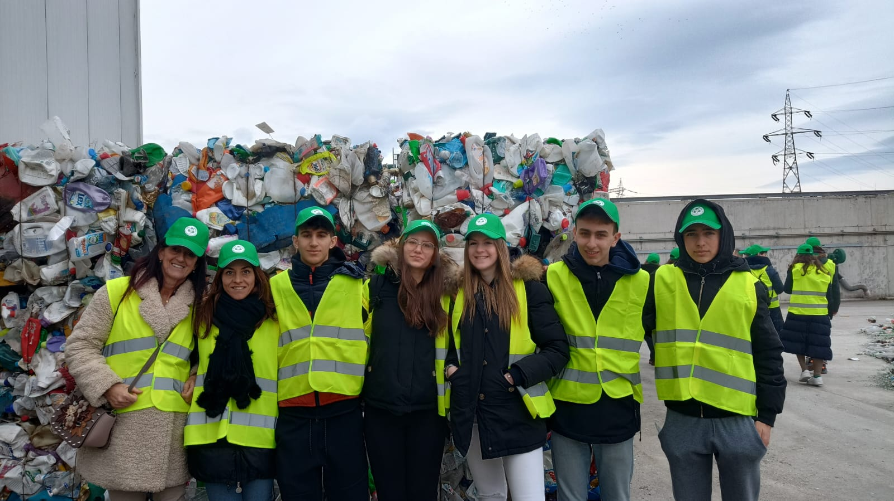

Progetto ERASMUS I-Go Eco
Quando e dove?
Il progetto si è svolto dal 6 al 12 marzo 2023 presso la città di Bacau in Romania
Obiettivi del Progetto
Comprendere la gestione dei rifiuti nel nostro paese
Prima della partenza ognuna delle delegazioni ha dovuto preparare un video/presentazione sulla gestione dei rifiuti nella propria zona, dovendo quindi indagare e approfondire aspetti estremamente importanti, come il riciclaggio, che solitamente trascuriamo.
Cercare idee per migliorare il riciclaggio
Tramite le presentazioni fatte dalle altre delegazioni, alle visite e ai vari laboratori che abbiamo fatto ci hanno pensare a nuove idee da adottare per migliorare o rendere più accessibile la gestione dei rifiuti nella nostra zona.
Condividere idee e conoscere persone di paesi differenti
Oltre a lavorare sulla gestione dei rifiuti e su come migliorarla, una parte molto importante del progetto è quella della socializzazione e della conoscenza di persone provenienti da peasi differenti dal nostro, obbligandoci a usare l'inglese per comunicare.
Cosa ho imparato
Migliorare la padronanza della lingua inglese
Essendo completamente circondato da persone preovenienti da altri paesi sono stato "obbligato" ad usare l'inglese, approfondendone un aspetto che solitamentea scuola è trscurato
Assumere una maggiore consapevolezza verso l'ambiente
Durante questa esperienza ho appreso quanto la l'ambiente sia importante e sopratutto quanto sia importante la sua salvaguardia e quanto questa viene quotidianamente trascurata
Comprendere l'Agenda 2030
Durante questa esperienza ho finalmente compreso i punti dell'Agenda 2030 che fino ad ora mi erano un pò astratti e mi sentivo distanti, infatti molti punti che abbiamo affrontato in questo progetto fanno parte dell'Agenda 2030
Punti in comune dell'Agenda 2030 con il progetto
I punti che abbiamo afforntato, in comune con l'Agenda 2030 sono: